- 

Leah Li
Leah graduated from the Queensland Conservatorium Griffith University under the tutelage of
Sebastien Lipman. She was the recipient of Ross Peters 4MBS Chamber Music Prize and performed
for the Honourable Dame Quentin Bryce (former Governor-General of Australia).
Leah‘s repertoire spans from the Baroque to the present day. She has a special
interest in Jazz and is seeking to fulfil this passion through further study.
Follow Leah at her webpage (link below).